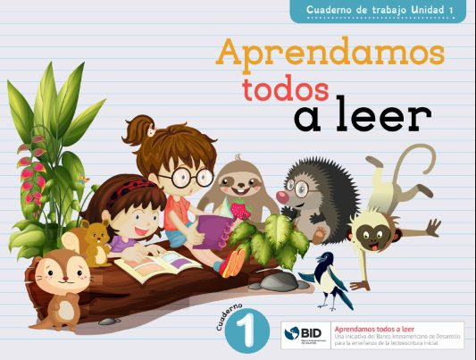
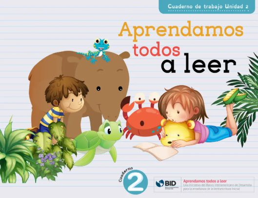
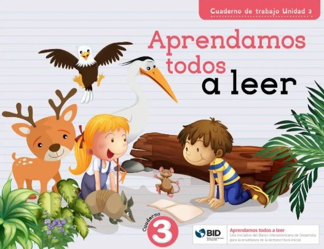
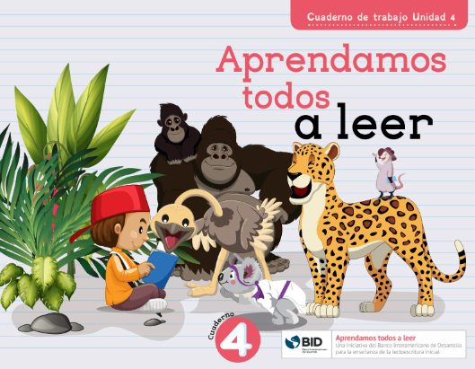
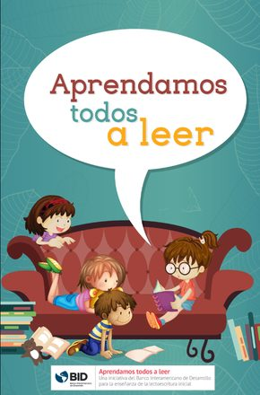
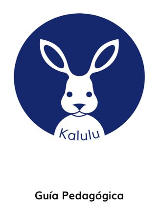
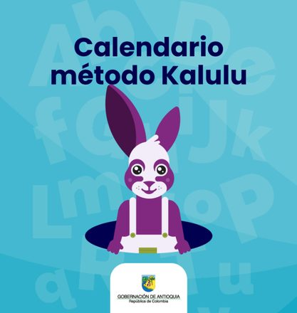

Alfabetización Inicial
Alfabetización Inicial Con ATAL
Implementas el método fonético sistemático con los materiales ATAL. Un facilitador te acompaña en el aula en tres fases: modelación, coanimación y observación.
Ver materialesEstrategia ALFA
Aquí encuentras los materiales pedagógicos y recursos de apoyo para implementar ATAL, Kalulu y Avanza+ en tu aula.
Tu rol en ALFA
ALFA se apoya en tu experiencia: tú llevas la propuesta al aula y dinamizas el cambio en tu institución educativa.
Implementas el método fonético sistemático con los materiales ATAL. Un facilitador te acompaña en el aula en tres fases: modelación, coanimación y observación.
Ver materialesIdentificas a los estudiantes que aún no han consolidado la lectura e implementas las rutinas Kalulu, con videos de apoyo y encuentros de formación.
Ver materialesAcompañas a estudiantes de secundaria que requieren apoyo para fortalecer la fluidez, la comprensión y la escritura.
Ver materialesRecursos y materiales
Elige el programa y el grado. Cada material se abre en Drive para verlo o descargarlo.

Cuaderno de trabajo · Unidad 1Lectura y escritura, primera unidad.
Cuaderno de trabajo · Unidad 2Lectura y escritura, segunda unidad.
Cuaderno de trabajo · Unidad 3Lectura y escritura, tercera unidad.
Cuaderno de trabajo · Unidad 4Lectura y escritura, cuarta unidad.
Libro de cuentosTextos para el lenguaje oral y la comprensión lectora.
Guía pedagógicaFundamentos y rutinas de implementación en segundo grado.
Calendario KaluluPlanificador de sesiones para organizar el trabajo en el aula. JuegoRevueltosKALULU Juego RevueltosRefuerza las correspondencias grafema-fonema. JuegoBingoKALULU BingoBingo pedagógico para reforzar el aprendizaje fonético. HerramientaLectómetroKALULU LectómetroHerramienta para medir el nivel lector de los estudiantes. RecursoHoja de pauta MontessoriKALULU Hoja de pauta MontessoriPapel con triple línea para guiar el trazo de las letras.Webinar · Miércoles 29 de abril
Grabación del webinar para docentes de segundo grado de Antioquia que buscan potenciar la alfabetización inicial en sus aulas. Conoce el método Kalulu y el material que está llegando a las instituciones educativas.
Descargar presentaciónSerie Kalulu en el aula · Video 1
Presenta Kalulu como parte de la Estrategia ALFA para las niñas y los niños de segundo grado que aún no han consolidado la lectura. Explica qué significa recuperar aprendizajes, en qué consiste la enseñanza fonética explícita, cómo se relaciona con la ciencia de la lectura y qué ventajas tiene el programa para estudiantes y docentes.
Serie Kalulu en el aula
4Así se desarrolla el programa Kalulu a lo largo de una semana
🎙 Podcast
Conversaciones con docentes y especialistas sobre cómo aprenden a leer los niños y las niñas, y qué pasa en las aulas de Antioquia con la Estrategia ALFA.
Implementación creativa de ATAL
Profe Yuri · Docente de Abejorral
La profe Yuri, docente de Abejorral con 16 años de experiencia, cuenta cómo usa Aprendamos Todos a Leer en su aula y cómo combina la ciencia de la lectura con dinámicas propias.
Episodios
El acompañamiento en el aula
Para docentes de transición y 1.° grado, un facilitador realiza algunas visitas al año siguiendo esta progresión:
El facilitador demuestra paso a paso la secuencia instruccional frente al grupo de estudiantes.
El facilitador y tú codirigen la clase juntos, compartiendo el liderazgo pedagógico.
Tú implementas de forma autónoma mientras el facilitador observa y retroalimenta.
Paneles subregionales
Capacitación presencial para docentes de preescolar y primaria en cada subregión: un panel con invitados y aulas interactivas donde se simulan clases con Aprendamos Todos a Leer y Kalulu. Elige tu subregión para ver la grabación y descargar las diapositivas.
Carepa · 28 de octubre · Grabación completa
Panel Subregión Urabá
Conversación con los panelistas invitados e intervenciones de los docentes que asistieron. Debajo están las diapositivas de las cuatro aulas interactivas.
Próximo panel
Panel Subregión Occidente
📅 Miércoles 11 de noviembre de 2026
🕑 2:00 p.m.
📍 Universidad de Antioquia, Campus Santa Fe de Antioquia (Cl. 9 # 7-36)
InscríbetePara docentes de Occidente
Si eres docente de preescolar o primaria en Occidente, participa en el panel y en las aulas interactivas con las herramientas de Aprendamos Todos a Leer y Kalulu. Después del encuentro publicaremos aquí la grabación y las diapositivas.
Serie del canal de docentes · WhatsApp
Únase al canal de docentes en WhatsApp para recibir videos de apoyo, orientaciones y novedades de la Estrategia ALFA.
Canal de docentes — WhatsApp